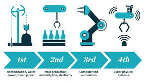

headline.
One more for good measure.
Cras justo odio, dapibus ac facilisis in, egestas eget quam. Donec id elit non mi porta gravida at eget metus. Nullam id dolor id nibh ultricies vehicula ut id elit.
.jpg)
robotic & AI
interdisciplinary branch of engineering and science that includes mechanical engineering, electronic engineering, information engineering, computer science, and others. Robotics deals with the design, construction, operation, and use of robots, as well as computer systems for their control, sensory feedback, and information processing.

IOT
is the network of devices, vehicles, and home appliances that contain electronics, software, actuators, and connectivity which allows these things to connect, interact and exchange data.
what is 4IR ?
The Fourth Industrial Revolution (4IR) is the fourth major industrial era since the initial Industrial Revolution of the 18th century. It is characterized by a fusion of technologies that is blurring the lines between the physical, digital, and biological spheres, collectively referred to as cyber-physical systems.[1] It is marked by emerging technology breakthroughs in a number of fields, including robotics, artificial intelligence, nanotechnology, quantum computing, biotechnology, the Internet of Things, the Industrial Internet of Things (IIoT), fifth-generation wireless technologies (5G), additive manufacturing/3D printing and fully autonomous vehicles.
First IR
The First Industrial Revolution took place from the 18th to 19th centuries in Europe and America. It was a period when mostly agrarian, rural societies became industrial and urban.[6] The iron and textile industries, along with the development of the steam engine, played central roles in the Industrial Revolution.
second IR
The Second Industrial Revolution took place between 1870 and 1914, just before World War I.[7] It was a period of growth for pre-existing industries and expansion of new ones, such as steel, oil and electricity, and used electric power to create mass production. Major technological advances during this period included the telephone, light bulb, phonograph and the internal combustion engine.[8]
Third IR
The Third Industrial Revolution, or the Digital Revolution, refers to the advancement of technology from analog electronic and mechanical devices to the digital technology available today. The era started during the 1980s and is ongoing.[9] Advancements during the Third Industrial Revolution include the personal computer, the internet, and information and communications technology (ICT)

about
And just as the IoT has its IoT stack with various layers of technologies, starting from the ‘things’, sensors, actuators and other embedded technologies (e.g. communication within the scope of the edge where this first layer of connected objects in the IoT stack sits), so isn’t Industry 4.0 just a matter of prioritized steps and the interconnection of several technological and other layers (including the integration of IT and OT) but also of several technologies that are needed to simply enable the optimization and maturity of Industry 4.0 projects and applications in which these smart connected objects find their place.


| name | administration | year | Title | section |
|---|---|---|---|---|
| hamed altouqi | history | third | 4 IR | 90 |
| abdulmajeed alsiabi | socy | third | 4 IR | 90 |